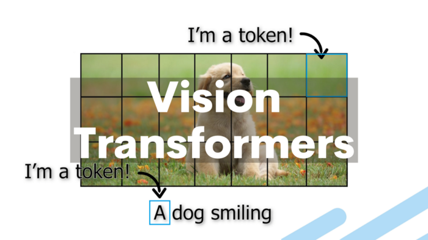

Introduction
Vision Transformers (ViTs) represent a paradigm shift in computer vision, adapting the transformer architecture that revolutionized natural language processing for image classification and other visual tasks. Instead of relying on convolutional neural networks (CNNs), ViTs treat images as sequences of patches, applying the self-attention mechanism to understand spatial relationships and visual features.
Background: From CNNs to Transformers
Traditional computer vision relied heavily on Convolutional Neural Networks (CNNs), which process images through layers of convolutions that detect local features like edges, textures, and patterns. While effective, CNNs have limitations in capturing long-range dependencies across an image due to their local receptive fields.
Transformers, originally designed for language tasks, excel at modeling long-range dependencies through self-attention mechanisms. The key insight behind Vision Transformers was asking: “What if we could apply this powerful attention mechanism to images?”
The fundamental breakthrough of ViTs was recognizing that images could be treated as sequences of patches, making them compatible with transformer architectures originally designed for text.
Core Concept: Images as Sequences
The fundamental innovation of ViTs lies in treating images as sequences of patches rather than pixel grids. Here’s how this transformation works:
Image Patch Embedding
- Patch Division: An input image (typically 224×224 pixels) is divided into fixed-size patches (commonly 16×16 pixels), resulting in a sequence of patches
- Linear Projection: Each patch is flattened into a vector and linearly projected to create patch embeddings
- Position Encoding: Since transformers don’t inherently understand spatial relationships, positional encodings are added to maintain spatial information
- Classification Token: A special learnable [CLS] token is prepended to the sequence, similar to BERT’s approach
flowchart LR
A[Input Image 224×224] --> B[Divide into 16×16 patches]
B --> C[196 patches]
C --> D[Flatten each patch]
D --> E[Linear projection]
E --> F[Add positional encoding]
F --> G[Prepend CLS token]
G --> H[Sequence ready for transformer]
Mathematical Formulation
For an image of size \(H \times W \times C\) divided into patches of size \(P \times P\):
- Number of patches: \(N = \frac{H \times W}{P^2}\)
- Each patch becomes a vector of size \(P^2 \times C\)
- After linear projection: embedding dimension \(D\)
Smaller patches (e.g., 8×8) provide finer detail but increase computational cost, while larger patches (e.g., 32×32) are more efficient but may lose important spatial information.
Architecture Components
Patch Embedding Layer
The patch embedding layer converts image patches into token embeddings that the transformer can process. This involves:
- Reshaping patches into vectors
- Linear transformation to desired embedding dimension
- Adding positional encodings
Transformer Encoder
The core of ViT consists of standard transformer encoder blocks, each containing:
- Multi-Head Self-Attention (MSA): Allows patches to attend to all other patches
- Layer Normalization: Applied before both attention and MLP layers
- Multi-Layer Perceptron (MLP): Two-layer feedforward network with GELU activation
- Residual Connections: Skip connections around both attention and MLP blocks
graph LR
A[Input Patches] --> B[Patch Embedding]
B --> C[Add Position Encoding]
C --> D[Add CLS Token]
D --> E[Transformer Encoder Block 1]
E --> F[Transformer Encoder Block 2]
F --> G[...]
G --> H[Transformer Encoder Block N]
H --> I[Extract CLS Token]
I --> J[Classification Head]
J --> K[Output Predictions]
Classification Head
The final component extracts the [CLS] token’s representation and passes it through:
- Layer normalization
- Linear classifier to produce class predictions
Self-Attention in Vision
The self-attention mechanism in ViTs operates differently from CNNs:
Attention Maps
- Each patch can attend to every other patch in the image
- Attention weights reveal which parts of the image are most relevant for classification
- This enables modeling of long-range spatial dependencies
Unlike CNNs that build up receptive fields gradually, ViTs have global receptive fields from the first layer, allowing immediate access to information across the entire image.
Global Context
The ability to model global context from the first layer is a key advantage of ViTs over traditional CNNs.
Training Considerations
Data Requirements
Vision Transformers typically require large amounts of training data to perform well:
- Pre-training: Often trained on large datasets like ImageNet-21k or JFT-300M
- Fine-tuning: Then adapted to specific tasks with smaller datasets
- Data Efficiency: ViTs can be less data-efficient than CNNs when training from scratch
Optimization Challenges
- Initialization: Careful weight initialization is crucial
- Learning Rate: Often requires different learning rates for different components
- Regularization: Techniques like dropout and weight decay are important
- Warmup: Learning rate warmup is commonly used
Training ViTs from scratch on small datasets often leads to poor performance. Pre-training on large datasets followed by fine-tuning is the recommended approach.
Variants and Improvements
ViT Variants
| Model | Patch Size | Parameters | Description |
|---|---|---|---|
| ViT-B/16 | 16×16 | 86M | Base model with 16×16 patches |
| ViT-L/16 | 16×16 | 307M | Large model with 16×16 patches |
| ViT-H/14 | 14×14 | 632M | Huge model with 14×14 patches |
| DeiT | 16×16 | 86M | Data-efficient training strategies |
Architectural Improvements
- Hierarchical Processing: Multi-scale feature extraction
- Local Attention: Restricting attention to local neighborhoods
- Hybrid Models: Combining CNN features with transformer processing
Advantages of Vision Transformers
Strengths
Technical Advantages: - Long-range Dependencies - Interpretability through attention maps - Scalability with model size - Architectural Simplicity
Practical Benefits: - State-of-the-art classification results - Excellent transfer learning - Strong multi-task performance - Domain adaptation capabilities
Performance Benefits
- State-of-the-art results on image classification
- Strong performance on object detection and segmentation when adapted
- Excellent transfer learning capabilities across domains
Limitations and Challenges
Current Limitations
| Limitation | Impact | Mitigation Strategies |
|---|---|---|
| Data Hunger | Poor performance on small datasets | Pre-training + fine-tuning |
| Computational Cost | High memory/compute requirements | Model compression, efficient variants |
| Lack of Inductive Bias | Missing spatial assumptions | Hybrid architectures |
| Training Instability | Sensitive to hyperparameters | Careful initialization, warmup |
Ongoing Research Areas
- Improving data efficiency
- Reducing computational requirements
- Better integration of spatial inductive biases
- Hybrid CNN-Transformer architectures
Applications Beyond Classification
Computer Vision Tasks
mindmap
root((ViT Applications))
Object Detection
DETR
Deformable DETR
Segmentation
SETR
SegFormer
Generation
VQGAN
DALL-E 2
Video Analysis
TimeSformer
Video ViT
Multimodal Applications
- Vision-Language Models: CLIP and similar models combining vision and text
- Visual Question Answering: Integrating visual and textual understanding
- Image Captioning: Generating descriptions from visual content
Implementation Considerations
Model Selection
Choose ViT variants based on:
- Computational Resources: Available GPU memory and compute budget
- Dataset Size: Larger datasets can support bigger models
- Inference Speed: Real-time applications need smaller, faster models
- Accuracy Requirements: Higher accuracy often requires larger models
Training Strategy
- Use pre-trained models when possible
- Apply appropriate data augmentation
- Consider knowledge distillation for smaller models
- Monitor for overfitting, especially on smaller datasets
Optimization Tips
# Example training configuration
training_config = {
"mixed_precision": True,
"gradient_checkpointing": True,
"weight_decay": 0.05,
"learning_rate": 1e-3,
"warmup_epochs": 5,
"batch_size": 512
}Future Directions
Research Trends
- Making ViTs more computationally efficient
- Mobile and edge deployment optimizations
- Pruning and quantization techniques
- Automated design of vision transformer architectures
- Neural architecture search for ViTs
- Hybrid CNN-Transformer designs
- Self-supervised learning approaches
- Reducing dependence on labeled data
- Few-shot and zero-shot learning capabilities
Emerging Applications
- Real-time vision applications
- Mobile and edge deployment
- Scientific imaging and medical applications
- Autonomous systems and robotics
Conclusion
Vision Transformers represent a fundamental shift in computer vision, demonstrating that the transformer architecture’s success in NLP can extend to visual tasks. While they present challenges in terms of data requirements and computational cost, their ability to model long-range dependencies and achieve state-of-the-art performance makes them a crucial tool in modern computer vision.
- Paradigm Shift: ViTs treat images as sequences of patches
- Global Attention: Immediate access to long-range dependencies
- Data Requirements: Best performance with large-scale pre-training
- Scalability: Performance improves with model and dataset size
- Versatility: Applicable across many computer vision tasks
The field continues to evolve rapidly, with ongoing research addressing current limitations while exploring new applications. As the technology matures, we can expect ViTs to become increasingly practical for a wider range of real-world applications, potentially reshaping how we approach visual understanding tasks.
Understanding Vision Transformers is essential for anyone working in modern computer vision, as they represent not just a new model architecture, but a new way of thinking about how machines can understand and process visual information.
This document provides a comprehensive overview of Vision Transformers. For the latest developments and research, please refer to recent publications and the official implementations.